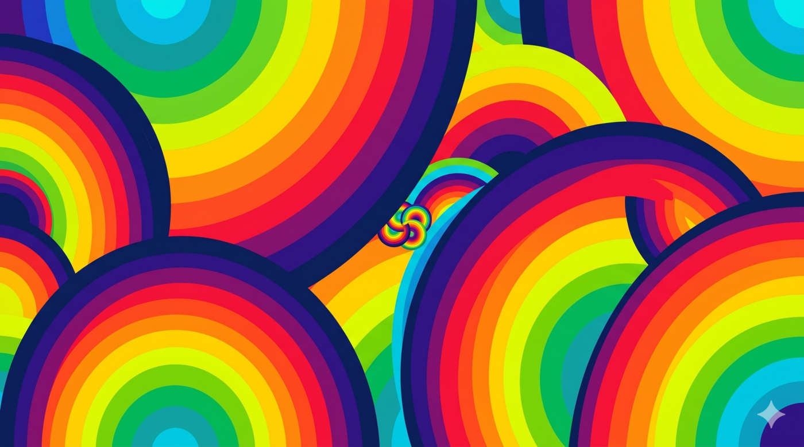
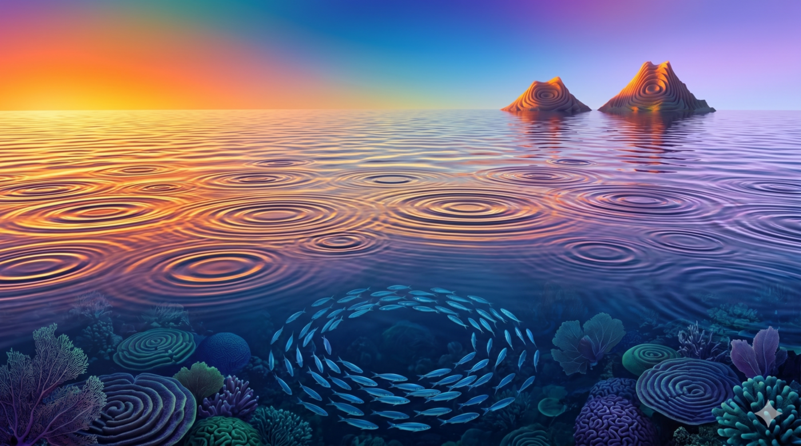
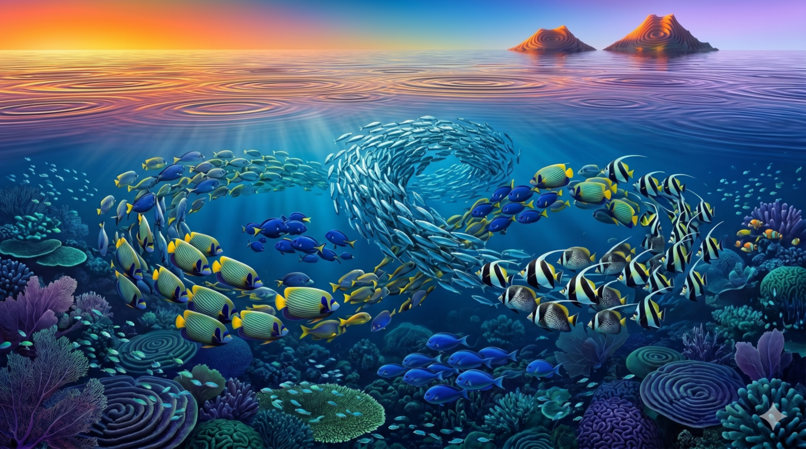
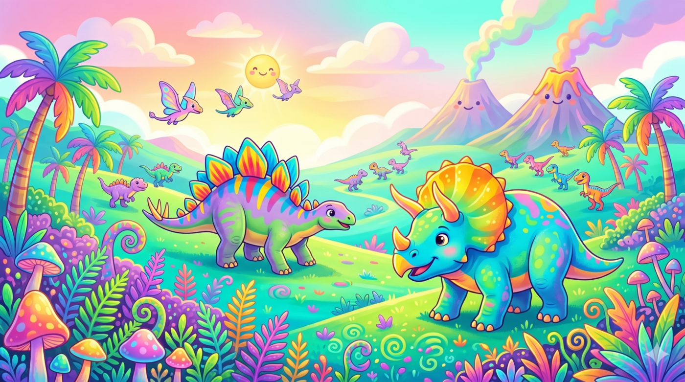
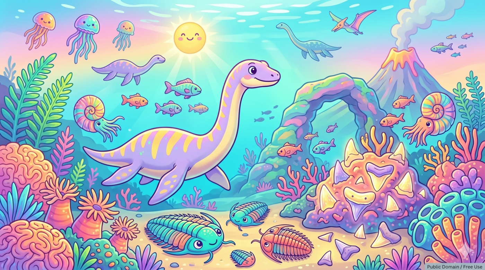
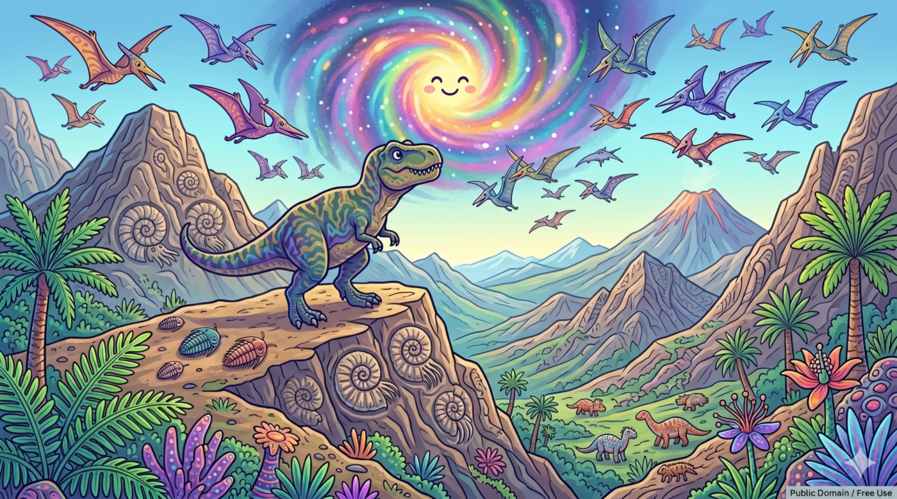
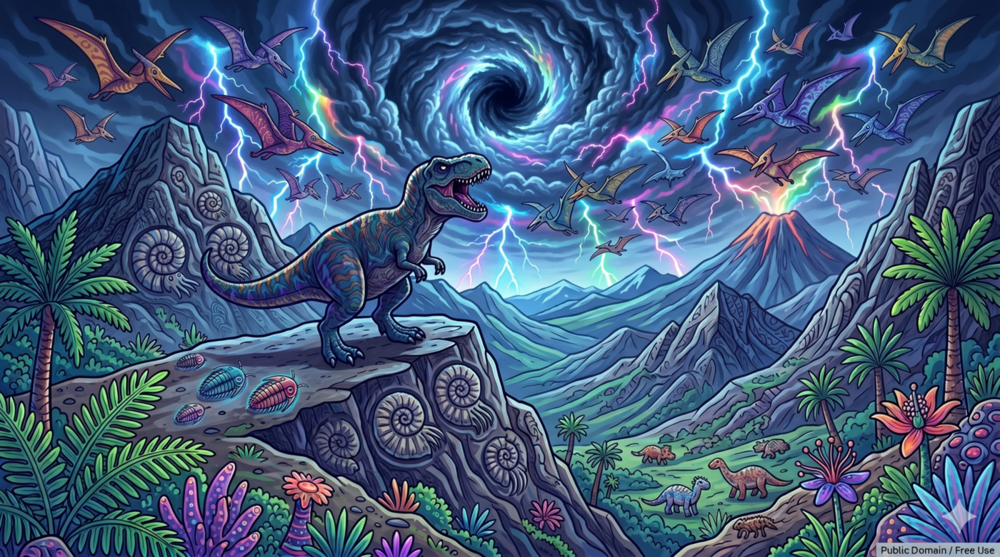

Feature Guide
ScratchArt Feature Guide
One of the most engaging art activities for students is scratch art: a hidden layer of color sits underneath a solid top layer, and students draw by erasing the top layer to reveal the colors below.
This activity is inspired by Eric Curts' original Jamboard idea, "Rainbow Scratch-Off Drawing Templates for Jamboard". DrawSplatTM makes the same kind of activity easy with ScratchArt. Instead of manually covering the whole canvas with marker strokes, DrawSplatTM can place a scratch cover over the board for you. Students then use the Eraser tool to reveal the rainbow background underneath.
What You Need
- A rainbow image or colorful pattern to use as the background
- DrawSplatTM
- The ScratchArt option from the Insert menu
- The Eraser tool
Step 1: Add a Rainbow Background
Open DrawSplatTM and choose the frame where students will create their ScratchArt.
Set a rainbow image as the background:
- Open Tools.
- Choose Set Background.
- Upload a rainbow image or colorful pattern.
- The image becomes the background layer of the whiteboard.
You can use a rainbow gradient, stripes, watercolor colors, a pattern, or any image you want students to reveal.
Where to Find Rainbow Background Images
You can use any image as the hidden ScratchArt layer in DrawSplatTM. For best results, choose a bright, high-contrast image with lots of color. Download the image first, then upload it in DrawSplatTM with Tools > Set Background.
Good free image sources:
- Unsplash Rainbow Backgrounds for photo-style rainbow skies, colorful nature images, and polished wallpaper backgrounds.
- Unsplash Rainbow Gradient Images for smooth color gradients that work especially well under ScratchArt.
- Pexels Rainbow Wallpaper Search for free rainbow wallpapers and abstract colorful backgrounds.
- Pexels Rainbow Abstract Wallpaper Search for blurred, bright, abstract color backgrounds.
- Pixabay Rainbow Gradient Images for gradients, stripes, abstract backgrounds, and classroom-friendly colorful images.
- Pixabay Rainbow Background Example as a direct example of a bright rainbow wallpaper-style image.
Before using an image with students, check the image license and download page. Sites like Unsplash, Pexels, and Pixabay generally provide free-to-use images, but it is still good practice to credit the photographer or source when possible.
Step 2: Add the ScratchArt Cover
Once the rainbow background is in place:
- Open the Insert menu.
- Choose ScratchArt.
- DrawSplatTM places a scratch cover over the canvas.
This cover sits above the background image. The rainbow is still there, but it is hidden until students erase parts of the cover.
Step 3: Draw with the Eraser
Now students can create their artwork:
- Select the Eraser tool.
- Choose an eraser thickness using the circle-size options.
- Drag on the canvas to draw or write.
As students erase, the ScratchArt cover disappears and the rainbow background shows through.
Smaller eraser sizes work well for names, outlines, and details. Larger eraser sizes are useful for bold shapes, large letters, and quick reveals.
Step 4: Try Different Backgrounds
Rainbow ScratchArt is only one option. You can also use:
- Space images
- Seasonal patterns
- Photos
- Color gradients
- Student-created backgrounds
- Vocabulary or hidden-message images
- Math, science, or social studies images
Anything placed as the background can become the hidden layer for ScratchArt.
Included ScratchArt Backgrounds
DrawSplatTM includes ready-to-use ScratchArt backgrounds in the image gallery. These work well when you want students to start quickly without searching for a separate rainbow or pattern image.







To use one, open the image gallery, choose a ScratchArt background, set it as the panel background, then add the ScratchArt cover.
Step 5: Save or Share the Finished Art
When students finish, they can save their work:
- Open File.
- Choose Export PNG.
Teachers can also use DrawSplatTM's board save options if they want students to continue working later.
Classroom Ideas
- Rainbow name art
- Hidden vocabulary words
- Reveal-the-answer activities
- SEL mood drawings
- Science diagrams with hidden labels
- Poetry or quote art
- Digital scratch-off reward boards
- Morning warmups or early-finisher activities
Why This Works Well in DrawSplatTM
- The background image stays behind the artwork.
- The ScratchArt cover sits above it.
- The Eraser reveals the hidden layer.
- Students do not need to build the scratch layer manually.
- Teachers can quickly swap in a new background for a new activity.
It gives students the same fun scratch-off reveal effect, but with a faster setup and more flexible classroom uses.
Quick DrawSplatTM Setup Summary
- Pick a colorful background image.
- Use Tools > Set Background to place it behind the canvas.
- Use Insert > ScratchArt to cover it.
- Select the Eraser.
- Choose an eraser thickness using the circle-size buttons.
- Draw to reveal the image underneath.